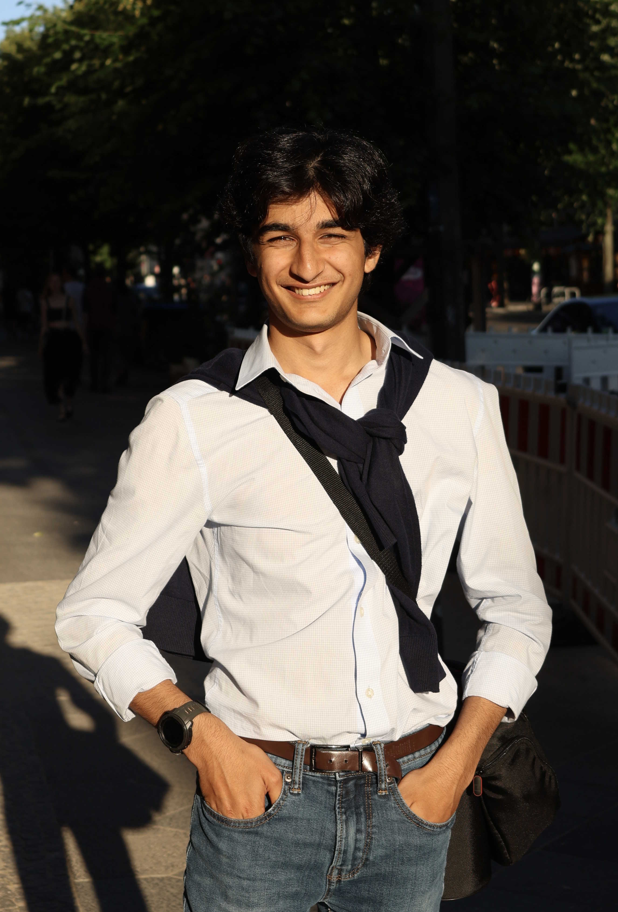

Shay
Kashif
Photographer · Filmmaker · Data Scientist
📷 Photography & Film
⌗ Data Science & CS
Scroll
Photographer · Filmmaker · Data Scientist
About
I'm Shay Kashif — I split my time between framing shots and training models. Photography taught me to find signal in noise; data science gave me the tools to prove it.
Whether I'm behind a lens or inside a Jupyter notebook, I'm chasing the same thing: a clear, honest picture of how things really work.

Photography & Film
Data Science & Engineering
From statistical modeling to neural networks — I build tools that make complex data legible. Especially interested in where computation meets human behavior.
Skills & Stack
Writing